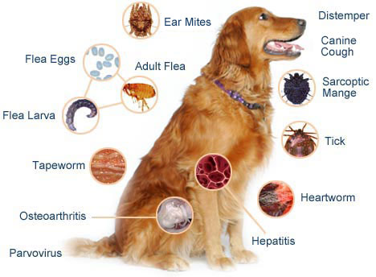

Dogs Deseases
Every year when you bring your pet in for a check-up, your veterinarian likely talks to you about vaccines and gives Fluffy or Fido a good look over. They may draw blood, or recommend preventative care routines, like a dental cleaning or grooming. But what are some of the most common serious ailments for cats and dogs that your veterinarian wants to help you prevent and control?
1. Obesity:
Obesity has become as serious of a problem in our pets as it is in the human population. Sadly, overweight pets are more prone to heart disease, diabetes, arthritis, and premature death. But while underlying disease or slow metabolism might be a factor, all too often, pet obesity is caused by doting pet parents who overfeed and underexercise their cats and dogs. There is no quick fix for obesity, but, just like with a human diet, check with your veterinarian for feeding and exercise guidelines. It might be as easy as swapping the dog treats with green beans or giving your cat a five-minute run with the laser pointer before bed. It might sound crazy, but when it comes to obesity, we can love our pets to death. You can help your dogs and cats live long lives by giving them the tools to stay light on their paws.
2. Heartworm
Heartworm is a disease spread by mosquitoes and it has been diagnosed in all 50 states. While it is much more common in dogs, cats can also acquire the disease. If the infection is caught early enough in dogs, it can generally be treated, but there is no cure for feline heartworm disease. Therefore, the best way to keep your pets heart free of potentially deadly worms, is through a monthly preventative, prescribed by your veterinarian.
3. Dental disease:
While everyone dreads “dog breath,” a stinky mouth is no joke. Both cats and dogs can develop tartar, gum disease, and cavities that require a professional dental cleaning. Dental disease is the perfect example of “an ounce of prevention is worth a pound of cure,” because bad oral health can also lead to dangerous heart and kidney conditions in pets. Teach your kittens and puppies that brushing their teeth is a normal part of your grooming routine and save your pet a dental procedure down the line.
4. Parvovirus:
Commonly called “parvo,” this virus is terribly common in parts of the country with low vaccination rates and can be seen in cats and dogs (although the disease cannot be spread cross-species). Parvo is most frequently seen in puppies and kittens who have not yet been vaccinated. The mortality rate depends on how quickly the symptomsare caught by the owner and addressed by a veterinarian and the strength of a pet’s immune system. Most survivors of parvovirus do not harbor long-term effects.
5. Distemper:
Distemper is a tragic, often fatal disease of dogs and puppies. While the distemper virus is part of the typical puppy vaccine series, puppies too young for vaccination and dogs who were never vaccinated are most vulnerable. The virus typically comes along with neurological symptoms, nasal discharge, and high fevers. It also has a high mortality rate, and the rare dogs who survive infection often bear long-term effects, such as seizures and hardened paw pads.
6. Rabies:
Rabies is the disease made famous in the hearbreaking scene in Old Yeller. Thankfully, the widespread use of the rabies vaccine in recent years has made its occurrence in pets in the U.S. quite rare. However, it is still present in wild animal populations, and because rabies is always fatal, it’s critical to make sure that your pets are current on their rabies vaccination.
7. Flea and tick borne diseases:
Fleas and ticks are certainly undesirable guests on your pets fur, but they are more than just unwelcome creepy crawlies. These tiny passengers can carry serious diseases that can cause profound illness in both pets and people. Want to keep your cats, dogs, and human family healthy? Use a monthly topical flea and tick preventative, vacuum regularly, and always check your pets and yourself after playing with other animals or in grassy fields.
8. Arthritis:
Arthritis is often seen as a rite of passage for our older pets. They may seem slow to rise in the morning, or a bit reluctant to jump up to their favorite spot on the couch. Your veterinarian can diagnose most forms of arthritis during a routine exam, but they may also recommend an x-ray to rule out other issues or evaluate how seriously inflamed the joints are. While there is no cure for arthritis, there are joint supplements, and even treatments like acupuncture, to help keep your pet as mobile as possible for as long as possible.
9. Diabetes:
Just like with humans, pets can develop diabetes as part of the aging process. While diabetes in cats and dogs can often be controlled by a plan of diet and exercise, some pets will require regular insulin shots.
10. Kidney disease:
Kidney disease is common in senior cats, but also seen in cats and dogs of all ages. It can be congenital or develop as the pet ages. While cats with kidney disease can be treated and kept healthy for several years in most cases, dogs typically deteriorate more quickly. Kidney health is typically evaluated with annual bloodwork at your veterinarian.